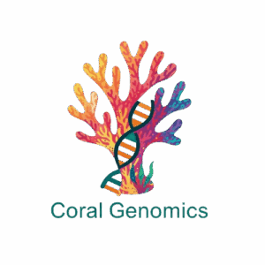

GENOME
-wide
Exploration
for
Novel
Organismal
Markers
to
Enhance
Coral Taxonomy and Conservation in Kenya
Home
About
Team
Publications
Contact
Partner Institutions
Pwani University Biosciences Research Centre (PUBReC)
Research & Conservation Support Society (RECOURSE)
REEFolution Foundation
Kenya Wildlife Service (KWS)
Wildlife Research & Training Institute (WRTI)
James Cook University, Australia